Практичний досвід · журнал «ДентАрт» 2024 №4
Повсякденна практика ендодонтичного прийому
DAILY PRACTICE OF ENDODONTIC TREATMENT
Клінічні приклади невдалого ендодонтичного лікування
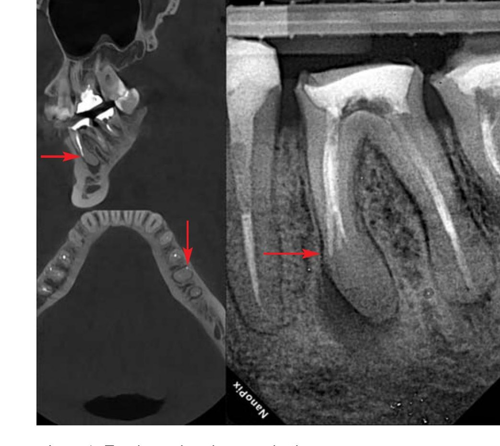
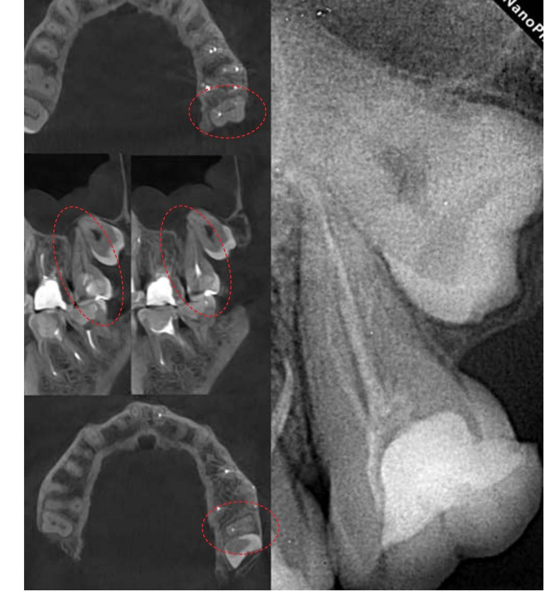
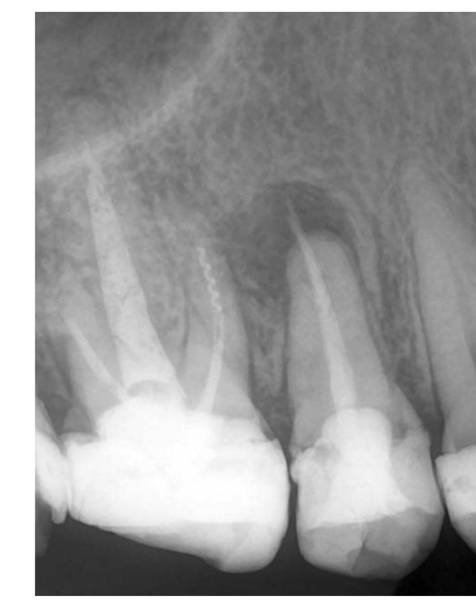
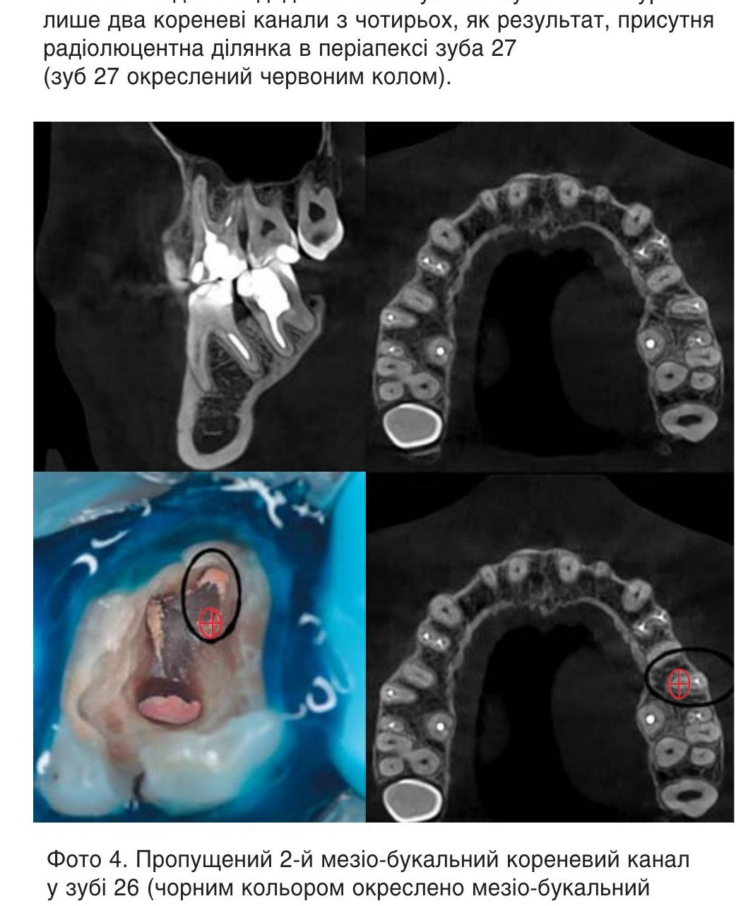
Ендодонтичне лікування не завжди закінчується успішно. Періапікальні вогнища запалення можуть персистувати або ж збільшуватися у розмірах після втручань. Подібні невдачі в більшості випадків викликані мікроорганізмами, які або збереглися після ендодонтичного втручання, або проникли в систему кореневих каналів пізніше в результаті негерметичної реставрації. Для боротьби з бактеріальною інвазією потрібна ортоградна (нехірургічна) або ретроградна (хірургічна) ревізія кореневих каналів. Як при первинному лікуванні інфікованих зубів, так і при повторному лікуванні основними етапами є очищення кореневих каналів від мікроорганізмів та герметична обтурація вільного простору біосумісним пломбувальним матеріалом.
Однак канали, які потребують повторного лікування, дуже часто технічно складні для обробки і потребують високого рівня мануальних навичок стоматолога. Поскільки зуби, які вже підлягали ендодонтичному лікуванню, досить часто відновлюють за допомогою різноманітних ортопедичних конструкцій, доступ до кореневих каналів здійснюється крізь штучну коронку. А в каналах містяться штифти (від стандартних фабричних до індивідуально виготовлених у зуботехнічній лабораторії), нерозчинний пломбувальний матеріал, та й куди ж ортоградна ревізія без фрагментованих ендодонтичних інструментів… Крім того, під час первинного лікування могли бути допущені методологічні помилки типу сходинки, апікальна транспортація, перфорації або блокада кореневого каналу.
Невеликий відступ: у 1979 році в популярному американському стоматологічному журналі «Dental Clinic of North America» було надруковано мнемотичне правило. Американці придумали класну назву – Poor Past, що з англійської перекладається як «погане минуле». Що таке «погане минуле»? «POOR»: «P» – перфорація (фото 1), «О» – неякісна обтурація (фото 2), «О» – перепломбування кореневого каналу (фото 3), «R» – пропущений кореневий канал (фото 4).
Типовими показаннями до консервативного повторного лікування буває «проблемний» зуб із неякісною або негерметичною обтурацією кореневих каналів. До тих пір, доки можливо провести механічну обробку та обтурацію якісніше, ніж при попередній спробі, ортоградний шлях є методом вибору у подібному випадку. Також є й великий мінус: небажання пацієнта йти на певні ризики, це перший пункт, другий – це платити значну суму за лікування. Поясню. Вартість лікування буде вищою, якщо старі коронки, мостоподібні конструкції підлягають видаленню з наступною заміною на нові. Виконання доступу через коронку (але відсоток успіху різко знижується за наявності вторинного карієсу під конструкцією, як наслідок, повторна контамінація просвіту кореневого каналу при лікуванні) та видалення штифтової конструкції в опорних зубах можуть збільшити ризик рухливості мостоподібної конструкції і розколу коренів зубів.
Нехірургічне повторне лікування може бути також рекомендоване через превентивні причини. Під час заміни коронки або штифтів контакт мікроорганізмів з обтураційним матеріалом неминучий. Незадовільна обтурація не здатна протистояти проникненню мікроорганізмів у кореневий канал. Як висновок, заміна невідповідної обтурації рекомендована майже завжди при монтажі нової ортопедичної конструкції.
Клінічний випадок 1
Пацієнтка, 34 р., направлена на повторне ендодонтичне лікування зуба 16. На момент звернення основна скарга – застрягання їжі (фото 1). Під час огляду виявлено велику композитну реставрацію, пальпація перехідної складки безболісна, перкусія негативна (фото 2). Зондування тканин періодонта без патологічних змін. На передопераційній інтраоральній рентгенограмі зуба 16 визначається вторинний каріозний процес, неповна та негомогенна обтурація кореневих каналів, пропущений другий мезіо-букальний кореневий канал, осередок просвітлення в проєкції мезіального та дистального щічних коренів.
Діагноз. Асимптоматичний апікальний періодонтит зуба 16.
Лікування. Виконали знеболення за допомогою апарата Wand STA (Milestone Scientific), використали 4 %–1/200000 Ubistezin (3M), далі видалили старий пломбувальний матеріал і тканини, уражені вторинним каріозним процесом, за допомогою кулястого алмазного бора з довгою ніжкою 6801L.314.016 (Komet), підвищуючого наконечника Ti-Max Z95L (NSK, Nakanishi, Inc) під контролем операційного мікроскопа Zumax 2350 (Zumax Medical Co Ltd) та карієс-маркера Sable Seel (Ultradent) (фото 3, 4).
З метою створення сприятливих умов для ізоляції зроблено передендодонтичне відновлення, яке включає: ізоляцію робочого поля системою рабердам (фото 5), повітряно-абразивну обробку поверхні зуба 16 за допомогою інтраорального наконечника RondoFlex (KaVo) з діаметром частинок абразиву 50 мкм (фото 6), адгезивний протокол, відновлення стінок core-композитом Luxa Core Z (DMG) (фото 7). Розпломбування кореневих каналів почали з мезіально-щічного та дистально-щічного, використавши розчинник (хлороформ), сталеві ручні К-файли Kendo (VDW) 06.02, 08.02, 10.02. Після отримання прохідності розширили кореневі канали ручними файлами в комбінації з понижуючим наконечником М4 (Sybron Endo) для більш м'якого переходу до ротаційних файлів.
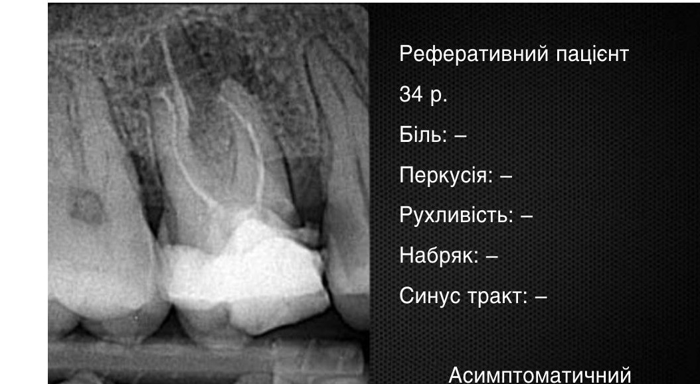
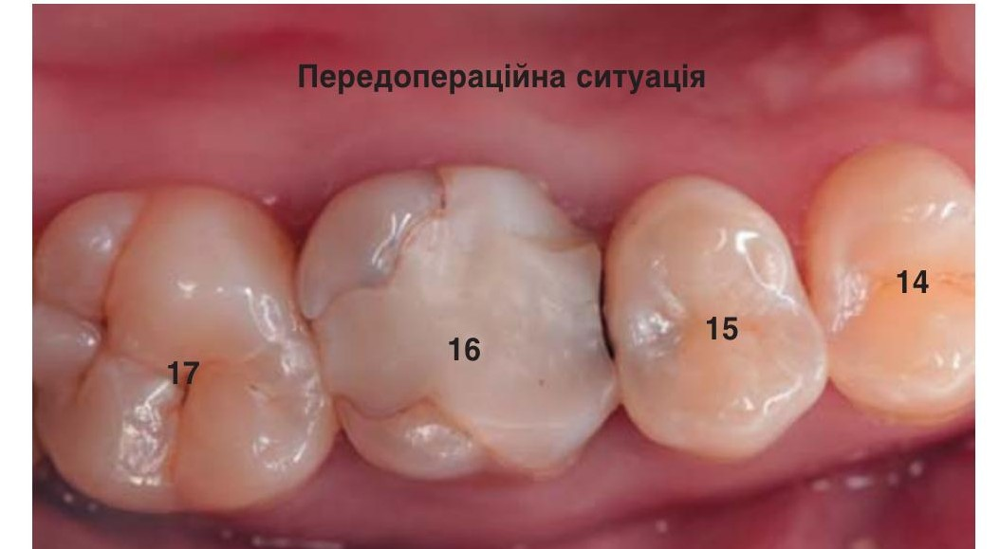
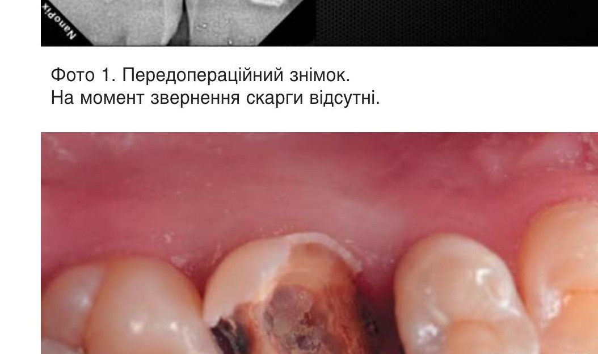
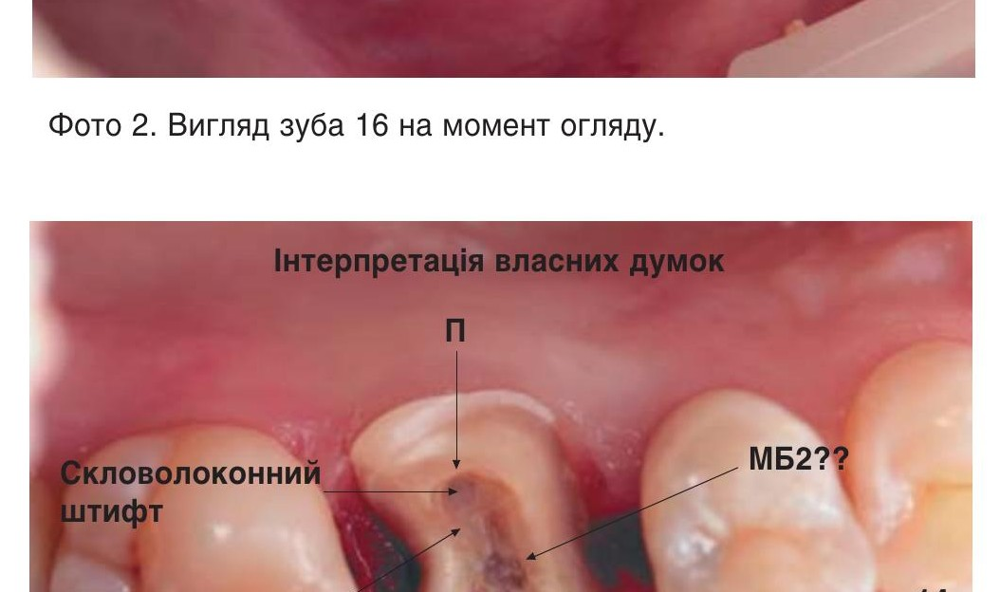
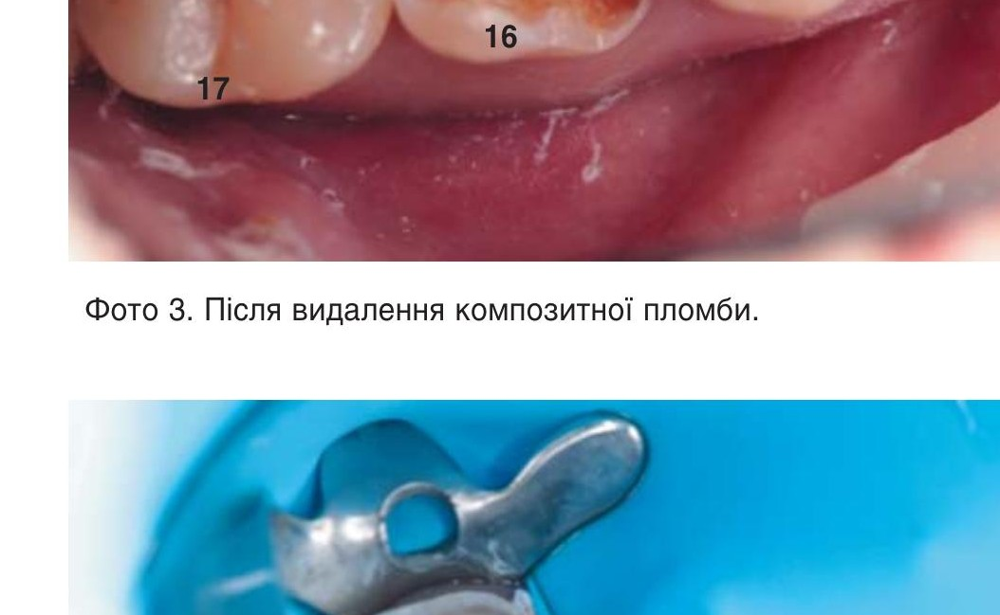
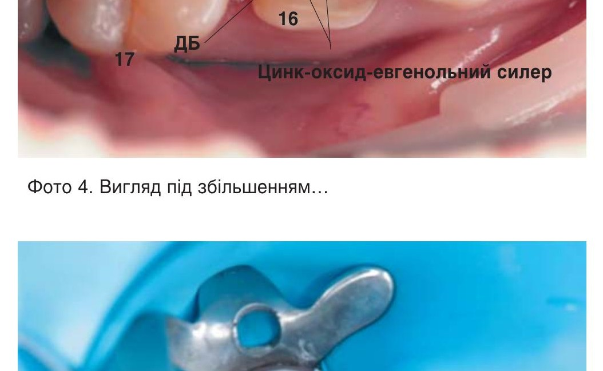
Скловолоконний штифт доволі швидко вдалося видалити з просвіту піднебінного кореневого каналу за допомогою насадки Е7 (NSK, Nakanishi, Inc) та ультразвукового апарата Varios 970 (NSK, Nakanishi, Inc), оскільки глибина занурення була не надто глибока (фото 8).
Розпломбування піднебінного кореневого каналу відбувалося за тією ж послідовністю, що й попередні два. І нарешті, який верхній перший моляр без другого мезіо-букального каналу? Важливо не тільки знайти, але й пройти його, один з дрібних хитрих моментів – під яким кутом вносити файл? Його слід вносити з дистально-палатинального напрямку, ні в якому разі не з мезіо-букального, що зазвичай роблять колеги. Це описано в книжці Михайла Соломонова «Монолог про переліковування», і підказка належить професору Ilana Heling. Дуже часто у вас таке буває: ви його знайшли, пройшли міліметрів три – і все! Найімовірніше, зробили сходинку.
Що роблю я? Дуже обережно спочатку 06.02, 08.02, 10.02 входжу в кореневий канал у дистально-палатинальному напрямку до першого спротиву без тиску інструмента в апікальному напрямку та, не виходячи інструментом з кореневого каналу, накладаю поверх ручки файла наконечник М4 (Sybron Endo) і працюю невеликий проміжок часу, увімкненим виходжу – далі промивання 5,25 % гіпохлоритом натрію. Розширюю устьову третину за допомогою ротаційних файлів, дуже до вподоби файли Race ISO 10 (FKG), набір складається з трьох файлів 10.02, 10.04, 10.06. Потім намагаюся пройти на всю робочу довжину, основне препарування здійснювалося E3 Azure (EndoStar).
Результати механічної обробки каналів (фото 10):
- MB1 – 14.0 mm – 40.04
- MB2 – 14.5 mm – 40.04
- DB – 15.0 mm – 40.04
- P – 16.0 mm – 45.04
Іригація: протягом усього ендодонтичного лікування використовували 5,25 % натрію гіпохлорит, для видалення змазаного шару – 40 % лимонну кислоту (фото 11).
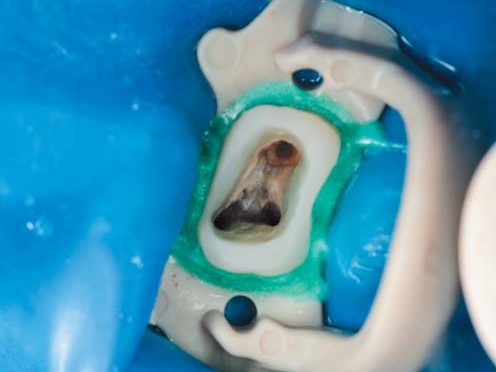
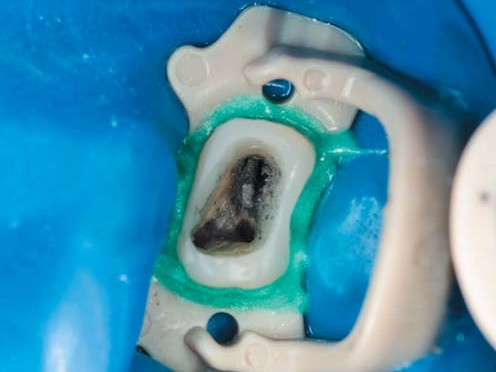
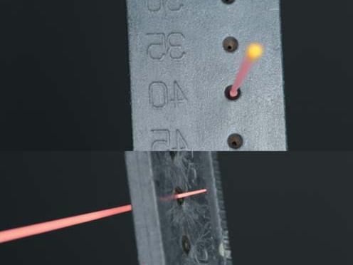
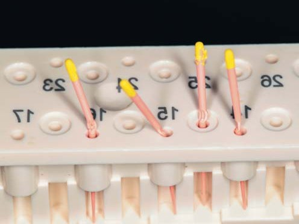
У відповідності з розмірами ISO відкалібрована гутаперча (фото 9), припасована у відповідних кореневих каналах, рентгенологічно перевірено якість розташування (фото 13). Вигляд пульпарної камери перед обтурацією – фото 12. Обтурація виконана в техніці вертикальної конденсації апаратом Fast Pack&Fast fill (Eighteeth) + епоксидний силер AH+ (Dentsply/Sirona) (фото 14).
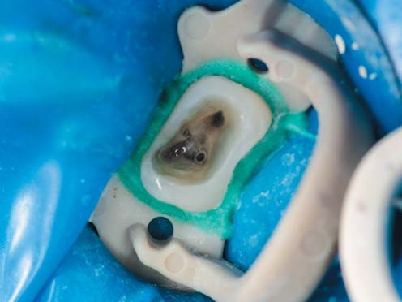
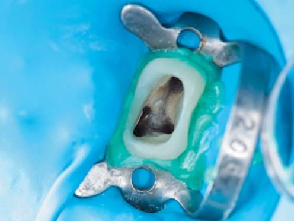
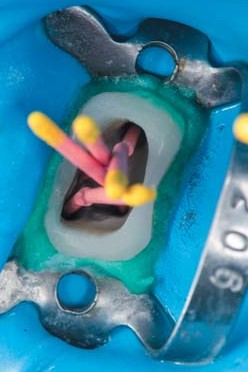
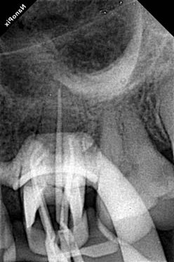
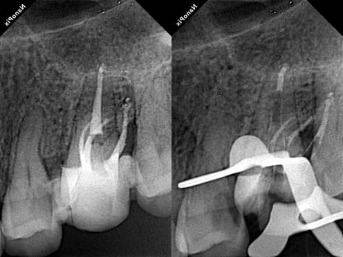
Далі армування за допомогою Over Post Prosthetic (Over Fibers), фіксація на композитний цемент подвійного твердіння core-композиту Luxa Core Z (DMG). Була виготовлена коронка з літію дисилікату від Ivoclar, зафіксована на композит VarioLink LC Warm (Ivoclar) (фото 15, 16). Рентгенконтроль якості полірування меж прилягання коронки – фото 18.
Чекаємо пацієнтку на профогляд через 6 місяців.
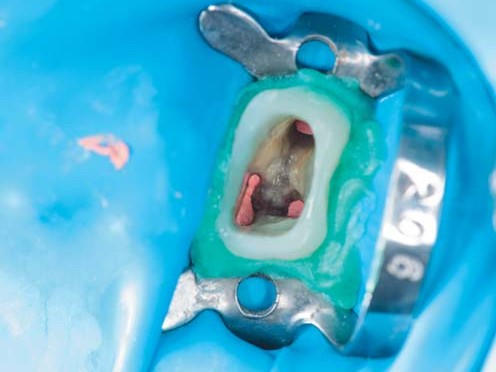
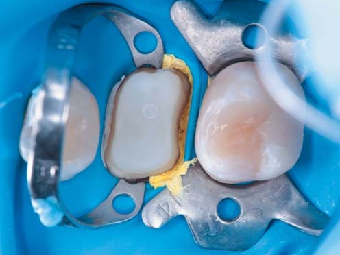
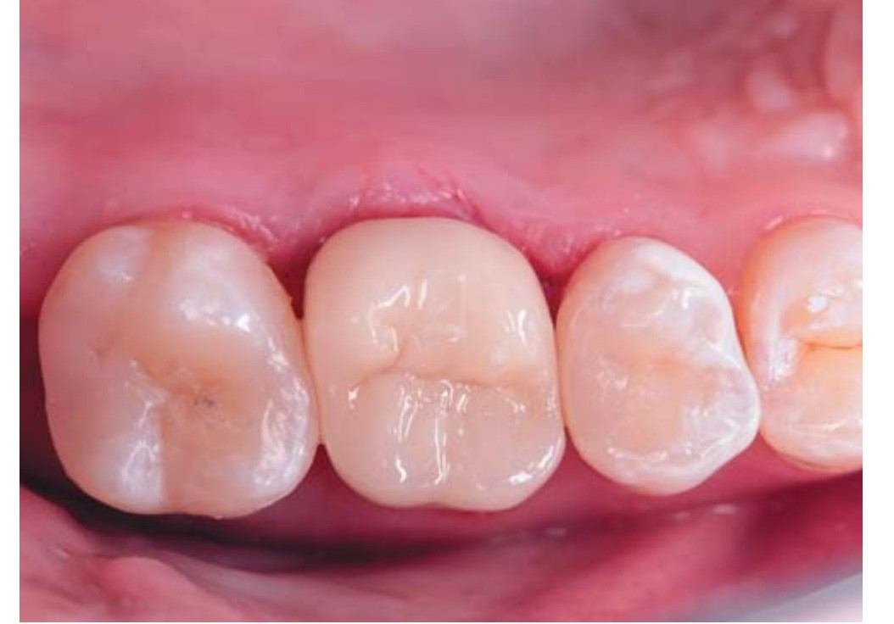
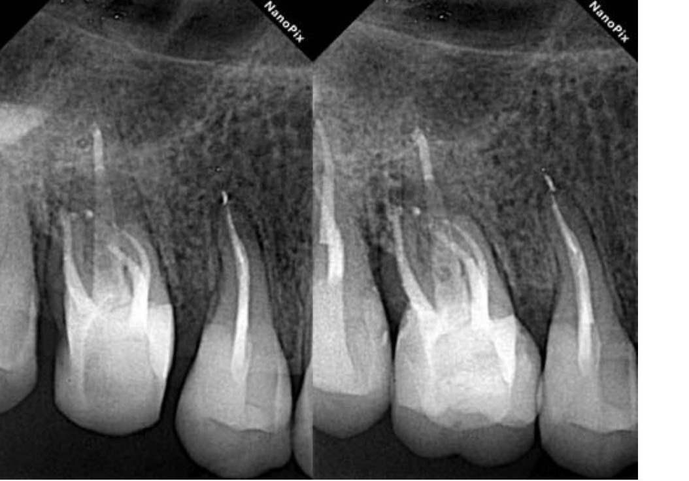
Клінічний випадок 2
Пацієнт, 42 роки, направлений для повторного ендодонтичного лікування, закриття перфорації та вилучення фрагментованих інструментів. Скарги на момент звернення відсутні (фото 1). При огляді: зуб 36 накритий металокерамічною коронкою (фото 3). Інтраоральна рентгенограма зуба 36: візуалізується коронка, вторинний каріозний процес, внутрішньокуксова вкладка (ВКВ), фрагментовані інструменти, негомогенна обтурація кореневих каналів. На КПКТ: перфорація зовнішньої стінки мезіо-букального кореневого каналу та радіолюцентні ділянки в проєкції верхівок медіального та дистального коренів відповідно. Усе схематично зображено на фото 2.
Діагноз: асимптоматичний апікальний періодонтит зуба 36.
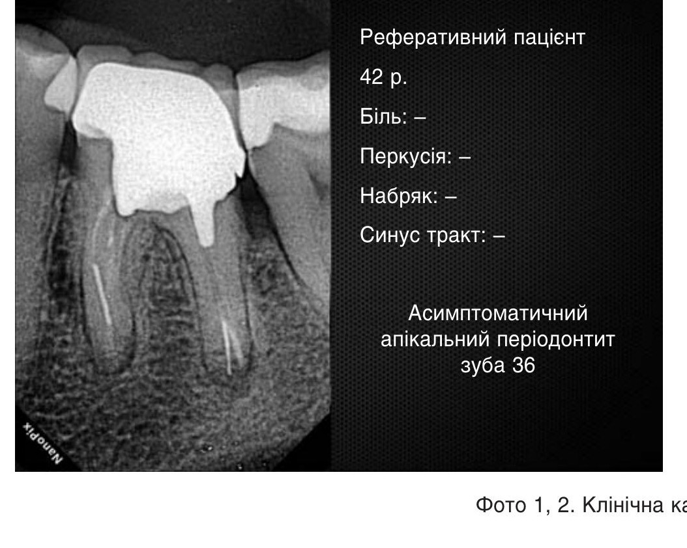
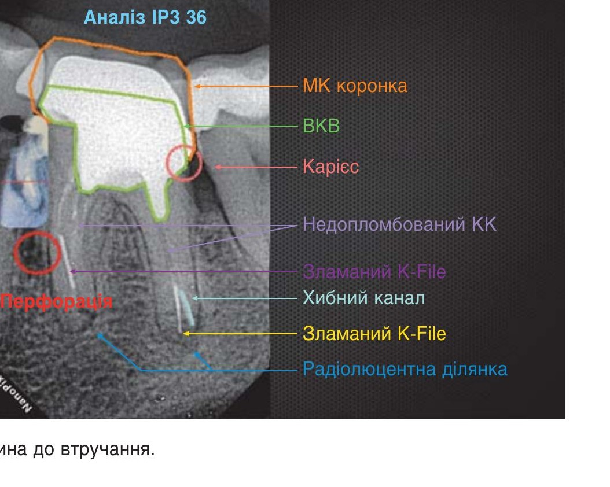
Лікування. Виконали знеболення за допомогою апарата Wand STA (Milestone Scientific), використали 4 %–1/200000 Ubistezin (3M), ізоляція операційного поля за допомогою рабердаму (KSK) та латексною хустинкою Nic Tone (MDS) за типом спліт-дам (фото 4). Циліндричним алмазним бором S 6856.314.016 (Komet) зробили розріз до металу і бором H34L.314.012 (Komet) виконали розпил металевого каркасу до металевої кукси зуба 36. Особливо важливо працювати під збільшенням і контролювати кожен свій крок роботи. Потім ортопедичну конструкцію обережно збили автоматичним коронкозбивачем SafeRelax (Anthoghyr).
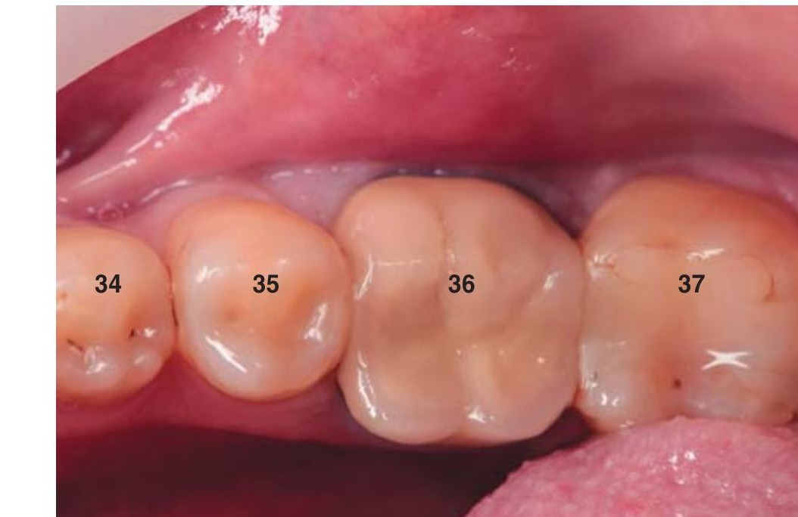
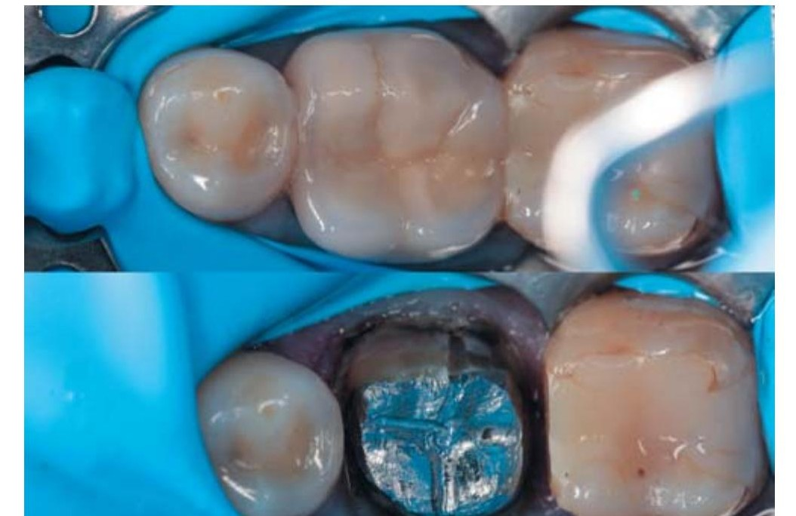
Під час вилучення вкладки або фабричних штифтів слід враховувати, що ультразвук при активній роботі збільшує температуру зовнішньої поверхні кореня. Якщо підвищення буде всього на 10°, в оточуючій кістковій тканині почнеться некроз. Був дослід, до якої температури може змінюватися температура зовнішньої поверхні кореня, коли ми працюємо ультразвуком без водяного охолодження. Відповідь – до 18° (Satterthwaite). А нам достатньо всього лиш 10° для появи деструктивних змін… Як цьому запобігти?
Працюємо сесіями по 15 с ультразвуком без водяного охолодження, потім асистент охолоджує пістолетом повітря – вода і т. д.
Внутрішньокуксову вкладку (ВКВ) обережно під контролем операційного мікроскопа Zumax 2350 (Zumax Medical Co Ltd) за допомогою турбінного наконечника і бора H34L.314.012 (Komet) розпиляли на дві частини, далі за допомогою насадки G26 (NSK, Nakanishi, Inc) та ультразвукового апарата Varios 970 (NSK, Nakanishi, Inc) вилучили дві частини вкладки (фото 5).
Наступний етап – відновлення стінок. Отже, повітряно-абразивну обробку поверхні зуба 36 виконали за допомогою інтраорального наконечника RondoFlex (KaVo) з діаметром частинок абразиву 50 мкм (фото 6), адгезивний протокол відновлення стінок core-композитом Luxa Core Z (DMG) (фото 6).
Ревізію розпочали із системи кореневих каналів дистального кореня, дистально-язичний кореневий канал майже весь був заповнений склоіономерним цементом (виконував фіксуючу роль), тож працювали ультразвуковою насадкою E7 (NSK, Nakanishi, Inc), розбивши весь цемент, дісталися до зламаних інструментів, їх виявилося два. Дістали інструменти за допомогою Sonic Spreader File, розмір № 30 та насадки Е1 (Woodpecker) (фото 7). Після промивання розчином 5,25 % NaOCl висушили паперовим піном, і вдалося під збільшенням візуалізувати справжній та хибний хід кореневого каналу. Це дало змогу провести якісне очищення за допомогою ротаційних файлів, ультразвуку в поєднанні з рясною іригацією (фото 8). До речі, дистально-щічний кореневий канал був заповнений повністю муміфікованою пульпою та об'єднався в середній третині з дистально-язичним кореневим.
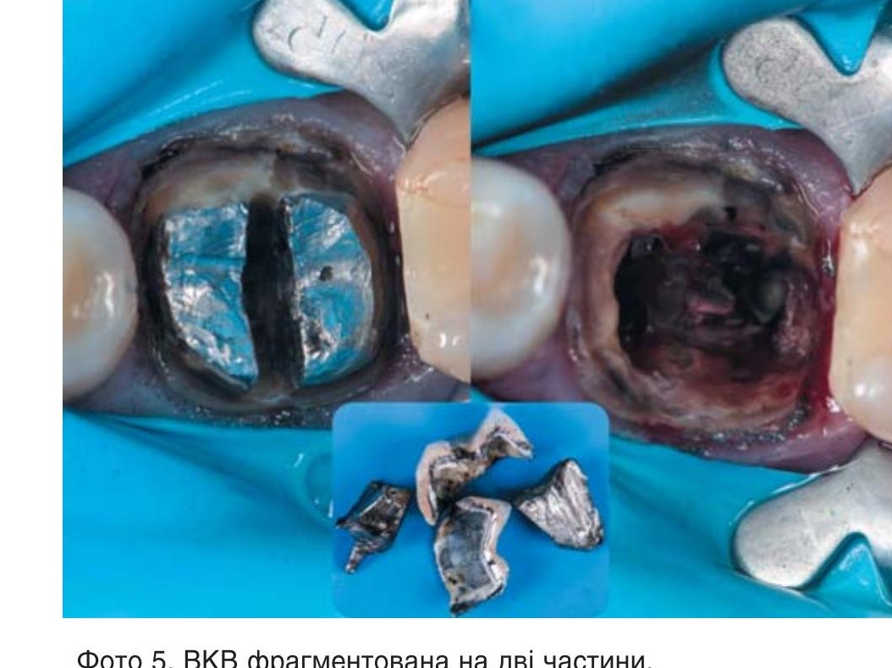
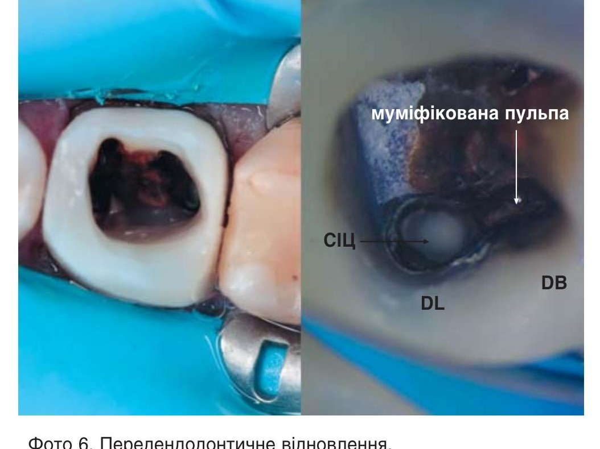
Ревізія каналів мезіального кореня: мезіально-язиковий кореневий канал був повністю заповнений муміфікованою пульпою, його доволі швидко пройшли та розширили до 45.04. Далі найцікавіше – виявлення перфорації в мезіально-щічному кореневому каналі на зовнішній стінці, поскільки вона була застаріла (був внесений кальційвмісний препарат AH Temp (Dentsply/Sirona) терміном на 7 днів), очищення за допомогою ультразвуку та розчину 5,25 % NaOCl, висушування за допомогою паперових штифтів, внесення апікальної матриці за межі кореня (фото 10) (для запобігання протрузії біокераміки). Перфорація та хибний хід були закриті біокерамікою TotalFill BC RRM Fast set PUTTY (FKG), внесеною за допомогою плагера S-Condensor#50 (Obtura/Spartan) та обережно сконденсованою злегка обрізаним кінчиком 45.02 паперовим штифтом Sure-Endo (фото 11).
Обтурація. Усе, як завжди: обтурація виконана в техніці вертикальної конденсації апаратом Fast Pack&Fast fill (Eighteeth) + епоксидний силер AH+ (Dentsply/Sirona) (фото 11).
Завершення лікування. Зуб 36 був армований за допомогою скловолоконних штифтів Over Post Prosthetic (Over Fibers), які у свою чергу фіксувалися на Luxa Core Z (DMG). Виготовлена тимчасова фрезерована коронка, фіксована на Relyx U-200 (3M) (фото 12).
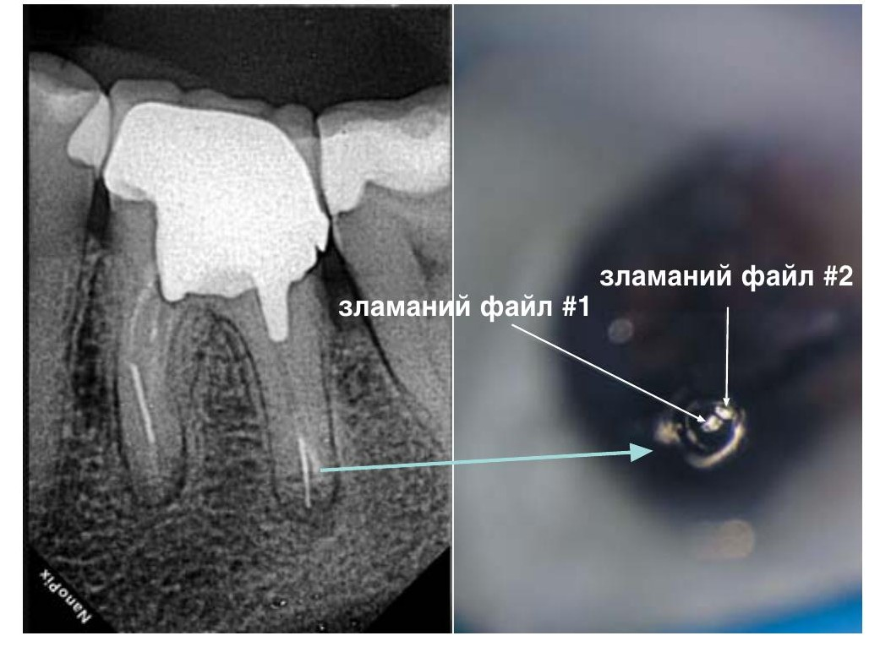
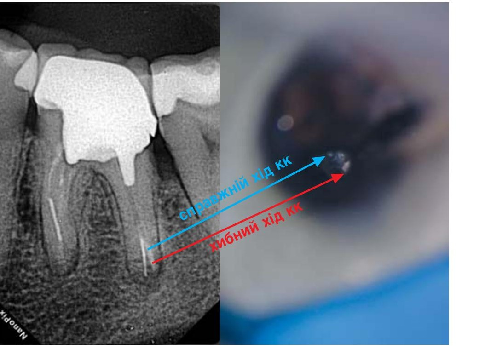
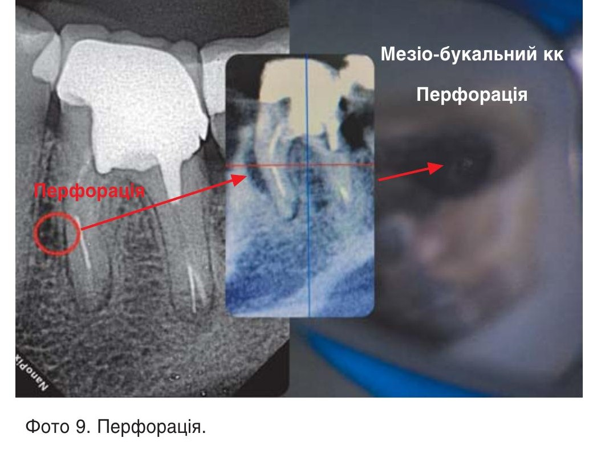
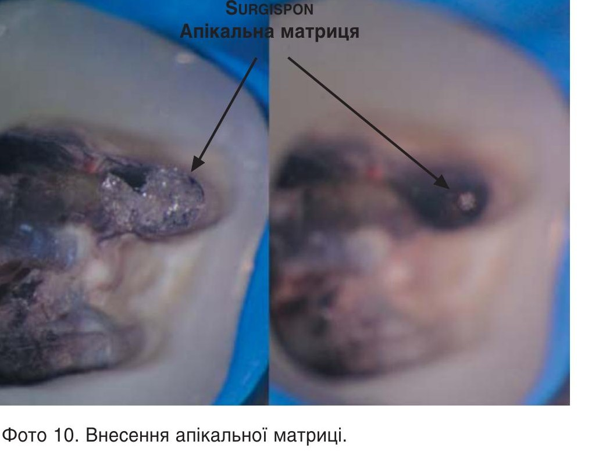
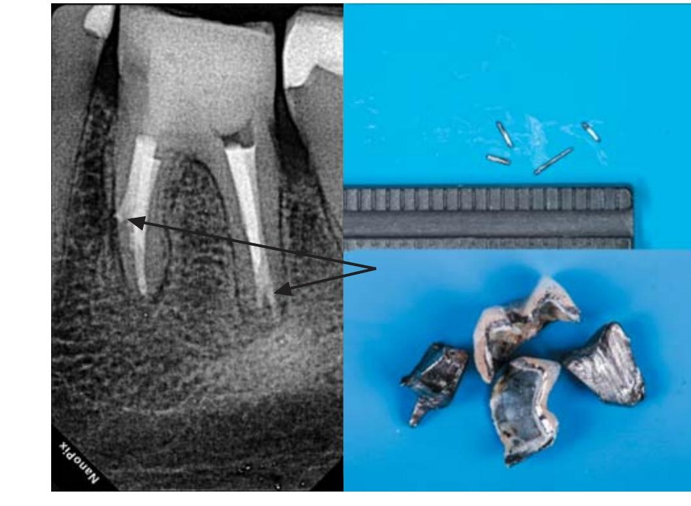
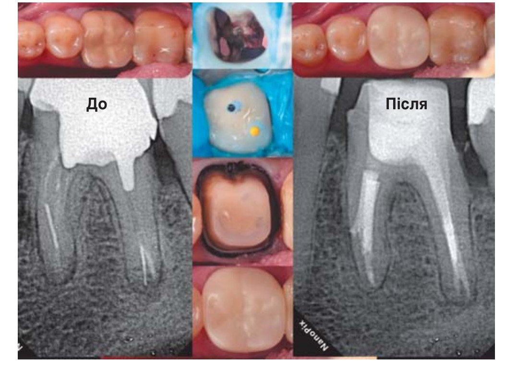
Висновки
На завершення процитую слова Герберта Шільдера: «Те, що ви видалите з кореневого каналу, важливіше, аніж те, що ви поместите в нього». Правильна оцінка ситуації, топографічні знання анатомії кореневих каналів, мануальні навички та сучасне матеріально-технічне забезпечення робочого місця лікаря значно розширюють можливості збереження зубів навіть у дуже складних клінічних випадках.
Література
- Fu M., Zhang Z. & Hou B. (2011). Removal of broken files from root canals by using ultrasonic techniques combined with dental microscope: a retrospective analysis of treatment outcome. Journal of Endodontics, 37, 619–622.
- Sjogren U., Haggalund B., Sundquist G., Wing K. (1990). Factors affecting the long-term results of endodontic treatment. Journal of Endodontics, 16, 498–504.
- Lin L. M., Rosenberg P. A. & Lin J. (2005). Do procedural errors cause endodontic treatment failure? The Journal of the American dental Association, 136, 187–193.
- Terauchi Y., O'Leary L. & Suda H. (2006). Removal of separated files from root canals with a new file-removal system: case reports. Journal of Endodontics, 32, 789–797.
- Friedman S., Abitbol S., Lawrence H. P. (2003). Treatment outcome in endodontics: the Toronto Study: initial treatment. Journal of Endodontics, 9 (12), 787–793.
- Orstavik D., Kerekes K., Eriksen H. M. (1986). The periapical index: a scoring system for radiographic assessment of apical periodontitis. Dental Traumatology, 2 (1), 20–34.